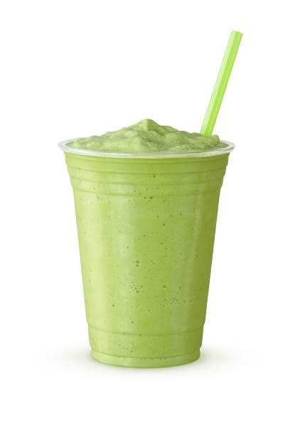

Master Shake Recipe
Shamrock Shake

Master Shake's real life counterpart is obviously a milkshake. The problem
is that the flavor is unknown. In the first season he shot out a green
substance, but in later seasons it was white.
To be safe we can say that he is a vanilla milkshake who might be add a mint
flavor in March, you know, for Saint Patricks Day.
Ingredients
- 1 pint vanilla ice cream
- 1/4 cup milk
- 1/2 teaspoon peppermint extract, if you want mint flavor
- 1/2 teaspoon pure vanilla extract
- Green food coloring, if you are adding mint flavor
- Styrofoam cup
Instructions
- Mix all ingredients together in a blender.
- Blend until smooth.
- Pour into styrofoam cup and enjoy.
Back to main